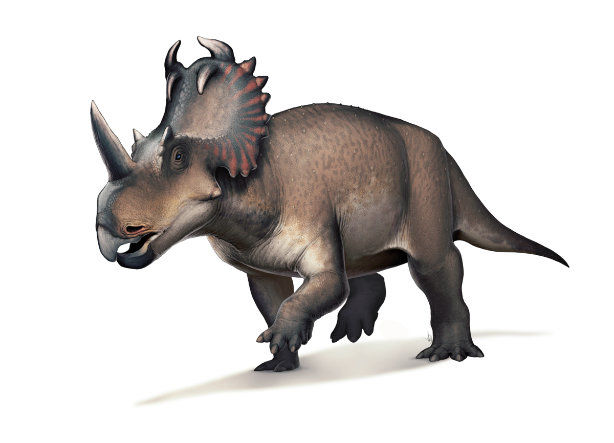

Цераподы
Цераподы (лат.Cerapoda) — один из двух подотрядов или групп птицетазовых динозавров. Цераподы были растительноядными динозаврами, которые жили на всех континентах. Название таксону было дано Полом Серено в 1986 году и указан как «Nanorder». Ныне первоначальная классификация была пересмотрена и не сохранилась. Было высказано мнение о монофилетичности группы Батлером и его коллегами в 2008 году, а также Салливаном в 2009 году.
Классификация цераподов
- Пахицефалозавры
- Пахицефалозавриды
- Цератопсы
- Пситтакозавриды
- Протоцератопсиды
- Цератопсиды
- Орнитоподы
- Гипсилофодонтиды
- Игуанодонты